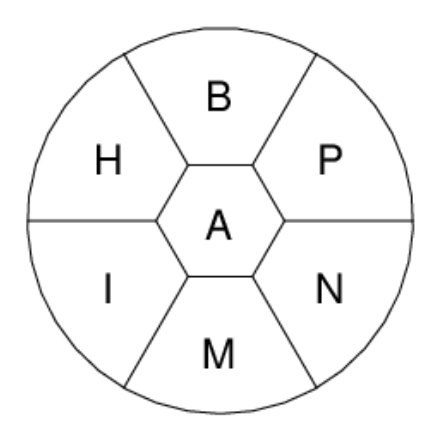

The NY Times Bee Puzzle
How many different New York Times Spelling Bee puzzles are there? Or more precisely, how many combinations of seven letters can be used to build Bee-type puzzles?
It turns out 7,742 different seven letters combinations can be used to generate Bee-style puzzles. There are more puzzles themseves based on what letter is chosen for the middle spot.
The majority of letter choices, about 62%, have just one pangram. That's lower than I expected, actually. It's not that uncommon to have two or three pangrams, which happens about about 25% of the time, and nearly four out of ten puzzles will have more than one pangram. The full output is here, the output of this little program.
Watch out for the combination einprst. If this one ever comes up, good
luck finding all twenty-seven of its pangrams.
The Bee Puzzle

The Bee consists of seven letters with one "special" letter in the middle. Make as many words as you can find with at least four letters, using only the letters given, but it has to use the center letter. Every puzzle has at least one pangram, a word that uses all letters; this example's pangram is amphibian. Wikipedia cites Frank Longo as the creator of the Bee.
nytbee.com has more today's puzzle and some interesting stats about these puzzles in general. They don't seem to be affiliated with the NY Times but that seem to be OK and is's a nice site.
Comments
Comments powered by Disqus